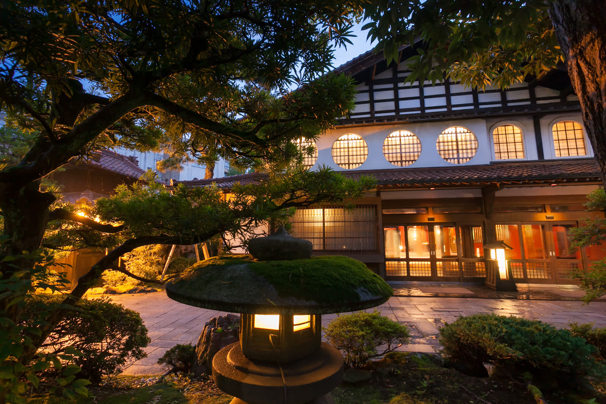
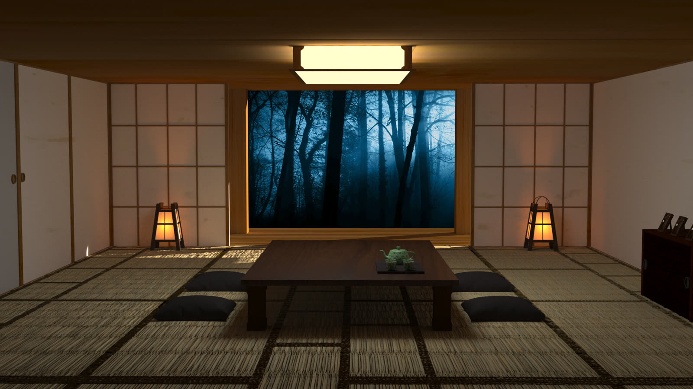

Når vi bor på hotel, er værelset bare et sted at sove. Vi tjekker ind, smider tasken og går ud i byen igen. En nat på en ryokan (旅館), et traditionelt japansk gæstehus, fungerer omvendt. Her er selve opholdet oplevelsen, og huset bestemmer rytmen: hvornår du bader, hvornår du spiser, og hvornår sengen bliver redt.
Traditionen er gammel. Verdens ældste hotel ifølge Guinness Rekordbog er en ryokan, Nishiyama Onsen Keiunkan i Yamanashi, som har taget imod gæster siden år 705.
Prisen er per person, og den inkluderer maden
Det første, der overrasker mange, er prisen. En ryokan tager typisk betaling per person og ikke per værelse, og prisen dækker ofte både aftensmad og morgenmad. Det kaldes ippaku nishoku (一泊二食), "én nat med to måltider".
Det kan se dyrt ud ved første øjekast, men det svarer mere til en middag på restaurant plus en overnatning end til et hotelværelse.
Ved ankomsten
Man tjekker typisk ind sidst på eftermiddagen, ofte omkring klokken 15. I indgangen, genkan (玄関), tager du skoene af og får et par indendørstøfler. Skoene bliver stående, og nogle steder sørger personalet for at stille dem på plads.
På værelset venter som regel en kop grøn te og en lille japansk kage, sat frem af værelsets vært, nakai-san (仲居さん), som tager sig af dig under opholdet.

Værelset
Et japansk værelse, washitsu (和室), har gulv af rismåtter, tatami (畳). Her tager du også tøflerne af og går rundt i strømpesokker eller bare fødder. Midt i rummet står et lavt bord med siddepuder, og i den ene væg er der en lille niche, tokonoma (床の間), med en rulle eller en blomsterdekoration. Nichen er husets fineste plads, så man stiller ikke tasker eller kufferter der.

Der er ingen seng, når du kommer. Den dukker først op senere.
Yukata og badet
På værelset ligger en yukata (浴衣), en let bomuldskimono, som du kan gå rundt i under hele opholdet: på værelset, til badet, til aftensmaden og til morgenmaden. Om vinteren ligger der ofte også en varm jakke til at tage udenpå.
Der er én regel, du skal huske: Venstre side lægges over højre. Omvendt, med højre over venstre, er sådan man klæder de døde på til begravelse i Japan.
Mange ryokan har deres eget onsen (温泉), et bad med vand fra en varm kilde. Det er her, de fleste starter aftenen: et bad før maden og måske et igen, inden man går i seng. Reglerne for badet, fra vaskepladsen til det lille håndklæde, kan du læse i Onsen i Japan, reglerne ingen fortæller dig.
Aftensmaden
Aftensmaden er ofte højdepunktet. Den serveres som kaiseki (会席料理), et måltid i mange små retter med sæsonens råvarer, lokale specialiteter og en omhyggelig anretning. Nogle steder spiser man i en fælles spisesal, andre steder bliver maden serveret på værelset.
Maden serveres på et fast tidspunkt, som du aftaler, når du tjekker ind. Køkkenet laver hver ret til tiden, så det er vigtigt at være der, eller give besked i god tid, hvis du bliver forsinket.
Vil du hellere spise ude, har mange ryokan også et tilbud uden måltider, sudomari (素泊まり). Så kan du finde en lille lokal restaurant i stedet.
Sengen, der kommer af sig selv
Mens du spiser eller bader, kommer personalet ind på værelset, flytter bordet og lægger en futon (布団) frem direkte på tatamigulvet: en madras, en dyne og en pude. Det kan være lidt af en overraskelse at komme tilbage og finde værelset forvandlet til et soveværelse.
Om morgenen bliver futonen ryddet væk igen, og der er morgenmad, ofte i japansk stil med ris, misosuppe, grillet fisk og syltede grøntsager. Check-ud er typisk omkring klokken 10.
Drikkepenge?
Nej. Drikkepenge er ikke en del af japansk kultur, heller ikke på en ryokan. Nogle japanere giver en lille gave i en konvolut, kokorozuke (心付け), til værelsets vært ved ankomsten, men det er slet ikke forventet af udenlandske gæster. Et venligt tak rækker langt.
Gæstfrihed som en kunst
Det, der gør en ryokan speciel, er ikke kun maden eller badet. Det er måden, man bliver taget imod på. Japanerne har et ord for det, omotenashi (おもてなし): en gæstfrihed, hvor værten tænker på dine behov, før du selv har nået at bede om noget. Du kan læse mere om omotenashi og de andre sider af japansk kultur, der kan virke mærkelige udefra, i Kulturchok i Japan.
For os kan de faste tider og de mange regler virke stramme. Men set indefra er det netop sådan, huset kan give hver gæst den fulde oplevelse: badet er varmt, maden står klar til tiden, og sengen er redt, når du kommer tilbage.
Ofte stillede spørgsmål om ryokan
Hvad er en ryokan?
En ryokan (旅館) er et traditionelt japansk gæstehus med tatamigulve, futon at sove på og ofte eget onsen. Prisen er typisk per person og inkluderer som regel aftensmad og morgenmad.
Hvordan tager man en yukata på?
Venstre side lægges over højre, og bæltet bindes om livet. Højre over venstre bruges kun til afdøde i Japan, så det er den ene regel, du skal huske.
Kan man bo på ryokan med børn eller uden at kunne japansk?
Ja, men mange mindre ryokan har ingen engelsk hjemmeside og tager kun imod reservationer på japansk. Nogle tager heller ikke imod små børn, så tjek reglerne, før du booker.
Skal man give drikkepenge på en ryokan?
Nej. Drikkepenge er ikke forventet i Japan. En japansk skik er en lille gave i konvolut, kokorozuke (心付け), men det er frivilligt og ikke noget, udenlandske gæster forventes at gøre.
Hvad er ippaku nishoku?
Ippaku nishoku (一泊二食) betyder "én nat med to måltider", altså overnatning med aftensmad og morgenmad. Det er den mest almindelige måde at bo på ryokan på.
Sådan får du en plads
De bedste ryokan er små, fyldes tidligt, og mange tager kun imod reservationer på japansk, ofte med spørgsmål om allergier, ankomsttid og hvornår I vil spise. Med en Rejseplan + booking reserverer jeg dem i jeres navn og lægger dem ind i dag-for-dag planen, så I kommer rundt uden at gætte.
Nogle spørgsmål til ryokan?
Udfyld følgende, så vender jeg tilbage hurtigst muligt.
Tak! Jeg har modtaget din besked og vender tilbage hurtigst muligt.
Læs også


Kilder
Følg Kantan for mere om Japan